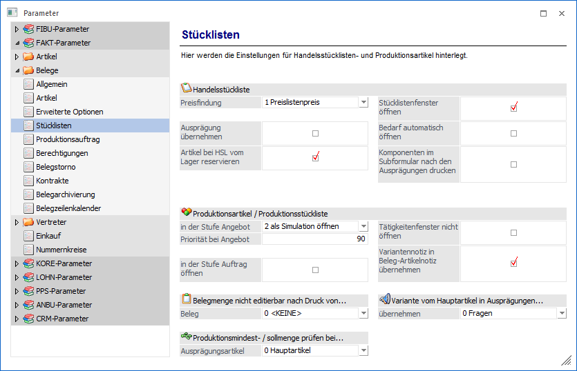
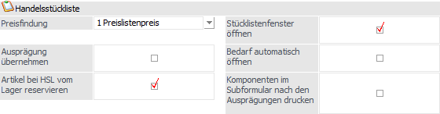
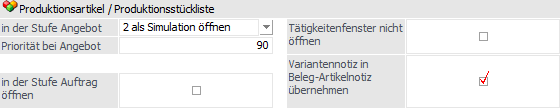
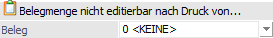
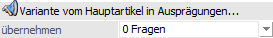

Über den Bereich "FAKT-Parameter - Belege - Stücklisten" können Einstellungen für Verwendung von Handelsstücklisten und Produktionsstücklisten in der WinLine FAKT vorgenommen werden.
Hinweis
Standardmäßig wird das Fenster in einem "Lesemodus" geöffnet, d.h. es können die bestehenden Einstellungen kontrolliert, Änderungen allerdings nicht durchgeführt werden. Hierfür muss zunächst mit Hilfe des Buttons "Bearbeiten" der "Bearbeitungsmodus" aktiviert werden. Alternativ kann diese Aktivierung auch über das Kontextmenü der rechten Maustaste (Funktion "Applikation xxx bearbeiten") erfolgen.

Handelsstückliste

Ø Preisfindung
Über den Eintrag aus der Auswahlliste kann die Preisfindung für Handelsstücklistenartikel bestimmt werden:
ü 0 - keine Preisfindung
Das
Handelsstücklisten-Fenster wird ohne jegliche Preisfindung geöffnet.
ü 1 - Preislistenpreis
Bei der
Preisfindung werden nur die VK-Preis 1 bis 8 vorgeschlagen. D.h. hier gelten
keinerlei Aktionspreise, Mengenstaffeln etc.
Die VK-Preise 1 bis 8 werden bei
der Anlage des allgemeinen Verkaufspreises der Preislisten 1 bis 8 automatisch
gefüllt.
ü 2 - Preisfindung
Die
Preisfindung wird, ähnlich wie beim Erfassen eines Beleges, angestoßen. D.h. es
gelten Aktionspreise, Mengenstaffel-Preise usw.
ü 3 - Einzelzeilen-Preisfindung
durchführen
Pro Position in der Stückliste wird gemerkt, ob sich der Preis
verändert hat, wobei der Preis auch bestehen bleibt, wenn die Preisfindung für
alle nicht geänderten Preise neu durchgeführt wird.
ü 4 - Einzelzeilen-Preisfindung (nur
oberste Ebene)
Beim Einfügen von Artikeln wird nur auf der obersten Ebene
(Endprodukt) die Preisfindung vorgenommen. D.h. wird ein Produktionsartikel oder
HSL-Artikel im Fenster "Stückliste bearbeiten" eingefügt, so wird die
Preisfindung aufgrund des hinterlegten VK-Preises vorgenommen.
Ø Artikel bei HSL vom Lager reservieren
Durch Aktivierung dieser Option werden bei dem Druck eines Kundenauftrags Reservierungszeilen für den Handelsstücklistenartikel gebildet, wenn die Ware "vom Lager" genommen werden soll, d.h. es wird eine Lagerreservierung gebildet (genügend Lagerstand vorausgesetzt). Des Weiteren wird bei dem Druck eines Lieferscheins die Lagerreservierung geprüft.
Ø Ausprägungen übernehmen
Wenn in einer Stückliste Hauptartikel mit Ausprägungen hinterlegt sind, so muss bei der Erfassung von diesen Stücklisten pro Hauptartikel die Ausprägung bestimmt werden.
Ist die Option "Ausprägungen übernehmen" aktiviert, so wird die Ausprägung bereits anhand der Hinterlegung z.B. aus dem Personenkonto oder dem Register "Zusatz" der Belegerfassung festgelegt und somit automatisch auf die Artikel in der Stückliste "weitergegeben". D.h. es werden auch vorhandene unausgeprägte Hauptartikel, sowie auch manuell zur Stückliste hinzugefügte Hauptartikel, automatisch ausgeprägt.
Ø Stücklistenfenster öffnen
Mit Hilfe dieser Option kann gesteuert werden, ob standardmäßig das Stücklistenfenster beim Erfassen geöffnet werden soll oder nicht. Bei den Stücklistenartikeln (Artikelstamm) kann dann noch individuell eingestellt werden, ob das Fenster laut dieser Einstellung oder anders behandelt werden soll.
Beispiel
Normalerweise sind die Stücklisten so definiert, dass keine Änderungen vorzunehmen sind. Dann wird hier die Option nicht aktiviert und bei den Artikeln kann die Option "lt. FAKT-Parameter" hinterlegt werden.
Bei speziellen Artikeln gibt es aber immer Änderungen und daher muss das Fenster geöffnet werden; in diesen Fall kann dann beim Artikel eingestellt werden, dass das Fenster trotzdem geöffnet wird.
Ø Bedarf automatisch öffnen
Wird diese Option aktiviert, so wird automatisch beim Öffnen des Handelsstücklisten-Fenster ins Register "Bedarf" gewechselt.
Hinweis
Dieses passiert nur, wenn in der Belegart die Prüfung der verfügbaren Menge zumindest auf "Warnung" gesetzt ist.
Ø Komponenten im Sub-Formular nach den Ausprägungen drucken
Verwendet die Handelsstückliste Ausprägungen kann mit Hilfe dieser Option der Andruck der Ausprägungen der Handelsstückliste gesteuert werden. Bei Aktivierung wird erst die Handelsstückliste angedruckt, dann die Ausprägungen über das Sub-Formular. Im Anschluss folgen die Komponenten der Handelsstückliste.
Produktionsartikel / Produktionsstückliste

Ø in der Stufe Angebot
An dieser Stelle kann definiert werden, was bei der Erfassung eines Produktionsartikels in der Belegstufe "1 - Angebot" geschehen soll:
ü 0 - nicht öffnen
Mit dieser
Option wird gesteuert, dass weder eine Simulation noch ein Produktionsauftrag
beim Erfassen eines Angebots angelegt werden soll.
ü 1 - als Produktionsauftrag
öffnen
Mit dieser Option wird gesteuert, dass das Fenster "Stückliste
bearbeiten" beim Erfassen eines Angebots geöffnet wird (nur auftragsbezogene
Produktion). Dadurch kann ein Produktionsauftrag für die Belegzeile angelegt
werden.
ü 2 - als Simulation öffnen
Mit
dieser Option wird gesteuert, dass das Fenster "Produktion - Simulation" beim
Erfassen eines Angebots geöffnet wird (nur auftragsbezogene Produktion). Dadurch
kann ein Simulationsauftrag für die Belegzeile angelegt werden.
Ø Priorität bei Angebot
Hier kann ein vordefinierter Prioritätswert hinterlegt werden, der in Belegstufe "Angebot" zur Anwendung kommt. Die möglichen Werte müssen zwischen 0 und 999 liegen. Der Standardwert in diesem Feld ist 90.
Ø in der Stufe Auftrag öffnen
Hierüber kann definiert werden, ob standardmäßig das Stücklistenfenster für Produktionsartikel beim Erfassen eines Kundenauftrags geöffnet werden soll, um während des Belegerfassens einen Produktionsauftrag anzulegen (diese Option wird nur bei "Produktionsartikeln" berücksichtigt). In diesem Zusammenhang werden folgende Prüfungen angeboten:
ü Wird eine entsprechende Belegzeile oder der Beleg wieder verworfen, erfolgt anschließend die Abfrage, ob auch der entsprechend angelegte Produktionsauftrag wieder gelöscht werden soll.
ü Besteht bereits ein gleicher Produktionsauftrag ("Kundennummer; Laufnummer; fortlaufende Nummer"), erfolgt die Abfrage, ob ein neuer Produktionsauftrag angelegt werden soll.
Hinweis
Zu beachten ist hierbei, dass zuerst weitere Fenster automatisch geöffnet werden können. Z.B. wenn in den PPS-Parametern eingestellt ist, dass der Artikelbedarf geprüft werden soll, dann öffnet sich zuerst der Bereich "Verfügbarkeitsprüfung". Sollte mit Ressourcen gearbeitet werden (d.h. die Stückliste enthält Tätigkeiten), so öffnet sich auch der Bereich "Tätigkeiten einplanen" und erst danach das "Stückliste bearbeiten"-Fenster. Erst zu diesem Zeitpunkt ist der Produktionsauftrag tatsächlich angelegt und kann somit bearbeitet werden.
Ø Tätigkeitenfenster nicht öffnen
Mit Hilfe dieser Option kann das Öffnen des Bereichs "Tätigkeiten einplanen" während des Belegerfassens verhindert werden. D.h. wird ein auftragsbezogener Produktionsartikel aus der Belegerfassung heraus angelegt, so öffnet sich zwar Fenster "Stückliste bearbeiten", der Bereich "Tätigkeiten einplanen" wird dabei nicht automatisch geöffnet. In der Stückliste enthaltene Tätigkeiten werden im Hintergrund als "nicht eingeplant" gekennzeichnet.
Ø Variantennotiz in Beleg-Artikelnotiz übernehmen
Durch Aktivierung dieser Option wird bei Produktionsartikeln mit Varianten die ausgewählte Variante in die Artikelnotiz übernommen. Die Darstellung des Textes ist hierbei Abhängig von der Einstellung "Anzeige" (Variantennotiz in RTF-Text) aus den PPS-Parametern (Bereich "Varianten").
Belegmenge nicht editierbar nach Druck von…

Ø Belege
Über diese Auswahl kann gesteuert werden, dass Mengen in einem zu bearbeitenden Auftrag nicht verändert werden können.
Die Prüfung erfolgt hierbei für Produktionsartikel mit auftragsbezogener Produktion bei welchen das Stücklistenfenster in der Stufe "2 - Auftrag" geöffnet wird. Folgende Einstellungen stehen zur Verfügung:
ü 0 - <KEINE>
Es erfolgt
keine Prüfung
ü 1 -
Materialentnahmeschein
Wurde bereits ein Materialentnahmeschein für den
Produktionsartikel gedruckt, so kann die Menge nicht mehr verändert werden.
ü 2 - Arbeitsschein
Wurde bereits
ein Arbeitsschein für den Produktionsartikel gedruckt, so kann die Menge nicht
mehr verändert werden.
Produktionsmindest- / sollmenge prüfen bei…
Ø Ausprägungsartikel
Über diese Auswahl kann gesteuert werden, ob die Produktionsmindestmenge des Hauptartikels oder des jeweiligen Ausprägungsartikels im Fenster "Ausprägungen erfassen" bei der Prüfung von einer Unterschreitung von der Produktionsmindestmenge berücksichtigt wird.
Hinweis
Die Produktionsmindestmenge wird im Register "Lager", Unterregister "Einstellungen" im Artikelstamm hinterlegt. Die Prüfung einer Unterschreitung der Mindestmenge kann in den PPS-Parametern im Bereich "Parameter" aktiviert werden.
ü 0 - Hauptartikel
(Standardeinstellung)
Mit dieser Einstellung wird im Belegerfassen im Fenster
"Ausprägungen erfassen" bei der Erfassung eines Kundenauftrages mit
Ausprägungsartikeln eines Produktionsartikels die Mindestmenge des Hauptartikels
berücksichtigt.
ü 1 - Ausprägung
Mit dieser
Einstellung wird im Belegerfassen im Fenster "Ausprägungen erfassen" bei der
Erfassung eines Kundenauftrages mit Ausprägungsartikeln eines
Produktionsartikels die Mindestmenge des jeweiligen Ausprägungsartikels
berücksichtigt.
Variante vom Hauptartikel in Ausprägungen…

Ø (Variante vom Hauptartikel in Ausprägungen) übernehmen
Mit dieser Einstellung kann für die Belegerfassung gesteuert werden, ob der beim Hauptartikel eingetragene Variantenstring in die Ausprägungszeilen des Artikels kopiert wird. Es stehen die folgenden Optionen zur Verfügung:
ü 0 - Fragen
Wird diese Option
gewählt, so erscheint eine entsprechende Meldung beim Erfassen der Variante beim
Hauptartikel. Dabei gibt es die Möglichkeit, die Auswahl durch Halten der
STRG-Taste zu speichern. Die Einstellung ist in den mesonic.ini im
Bereich
[Belegerfassen]
CopyVariante=x
gespeichert (0 = Nein,
1 = Ja). Der gespeicherte Eintrag in der mesonic.ini wird nur bei dieser Option
berücksichtigt.
ü 1 - nie
Wenn diese Option
eingetragen wird, so wird die beim Hauptartikel erfasste Variante nie
automatisch in die Ausprägungszeilen als Variante übernommen.
ü 2 - immer
Wenn diese Option
eingetragen wird, so wird die beim Hauptartikel erfasste Variante immer
automatisch in die Ausprägungszeilen als Variante übernommen.